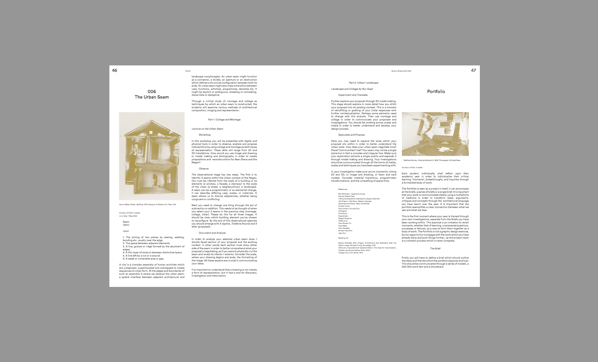
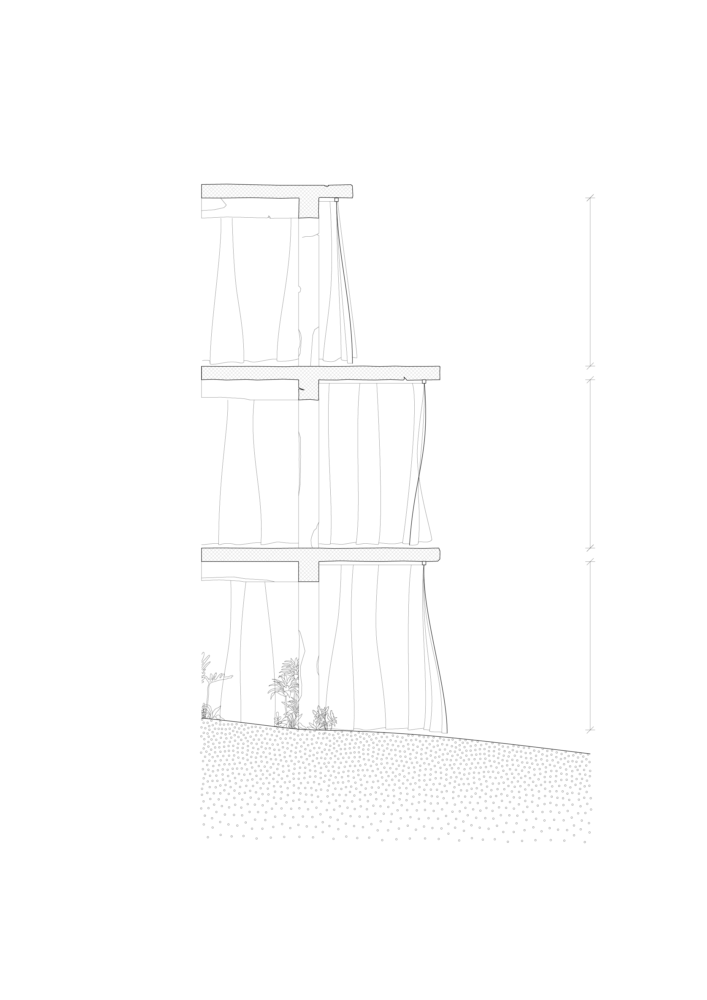
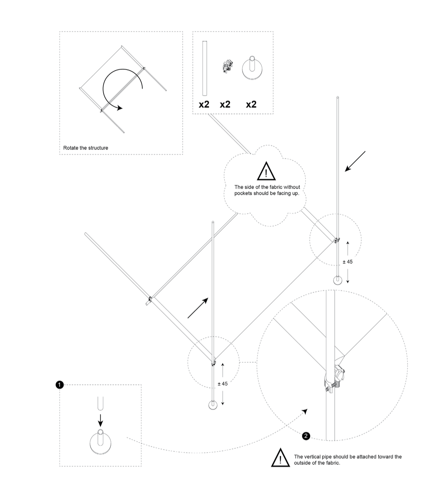
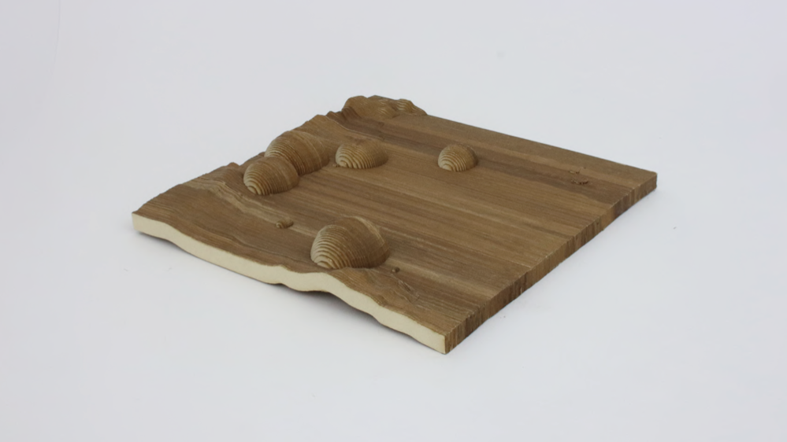
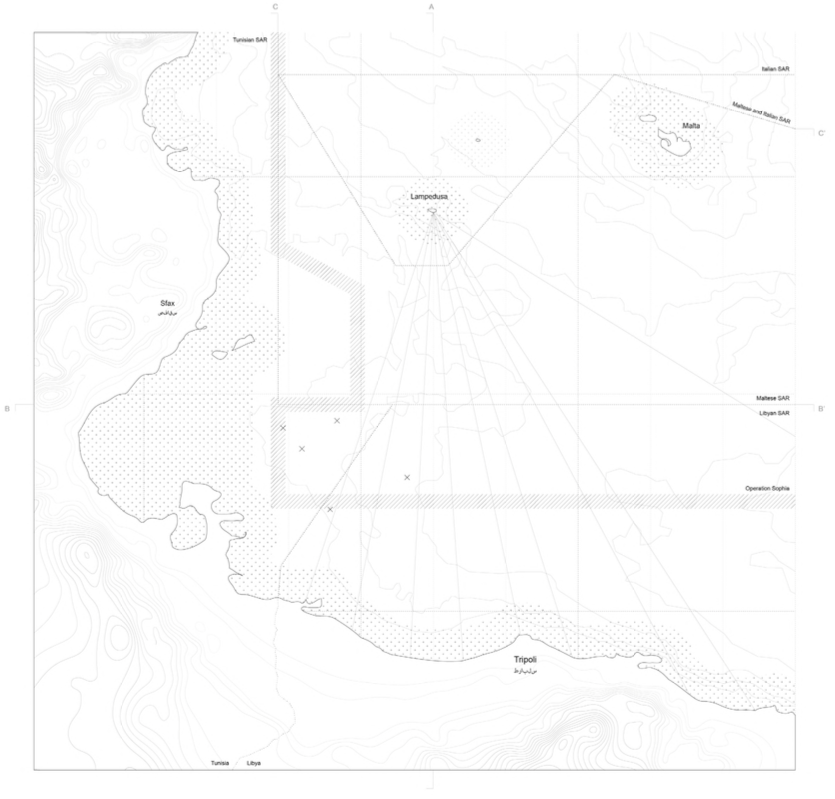

Balthazar Auguste-Dormeuil Arch. DE ENSAPM badormeuil@gmail.com T +972-54-980-1813

"Book of Briefs #1", Negev School of Architecture, 2022

Tbilisi Architecture Biennal, 2022

Fabric Shelter, Sendai, Japan, 2021

Fabric Shelter, Sendai, Japan, 2021

Fabric Shelter, Sendai, Japan, 2021

"Fluid Borders of Virtual Territories", 2019

"Fluid Borders of Virtual Territories", 2019